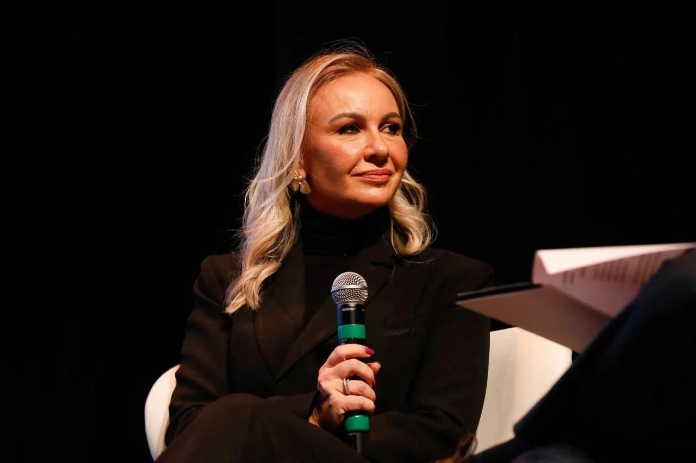
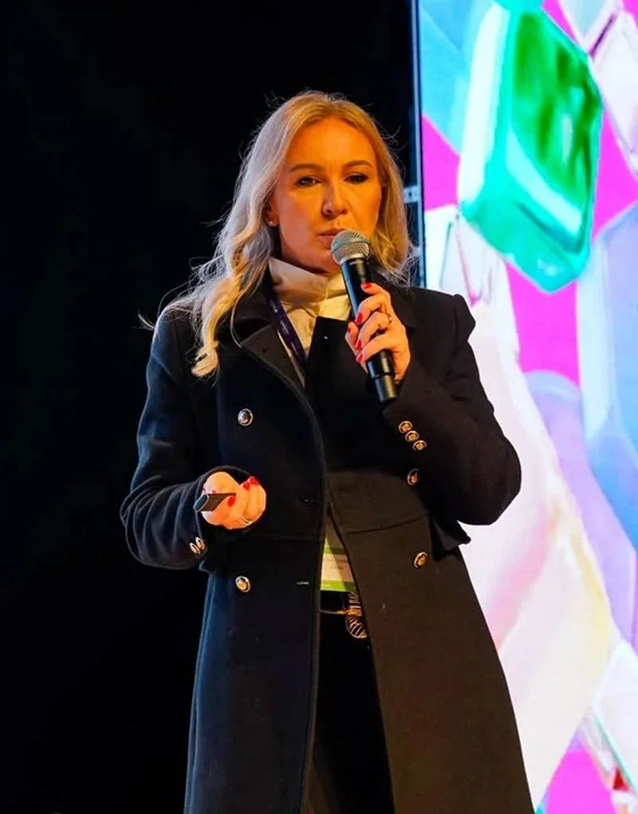
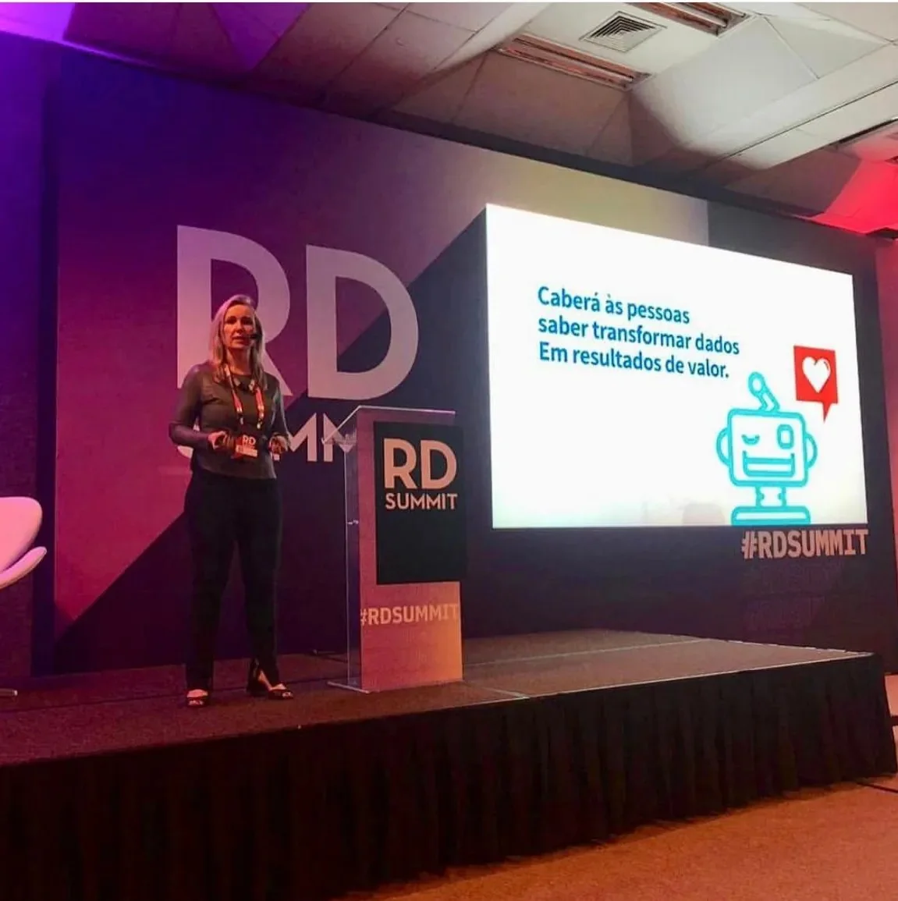
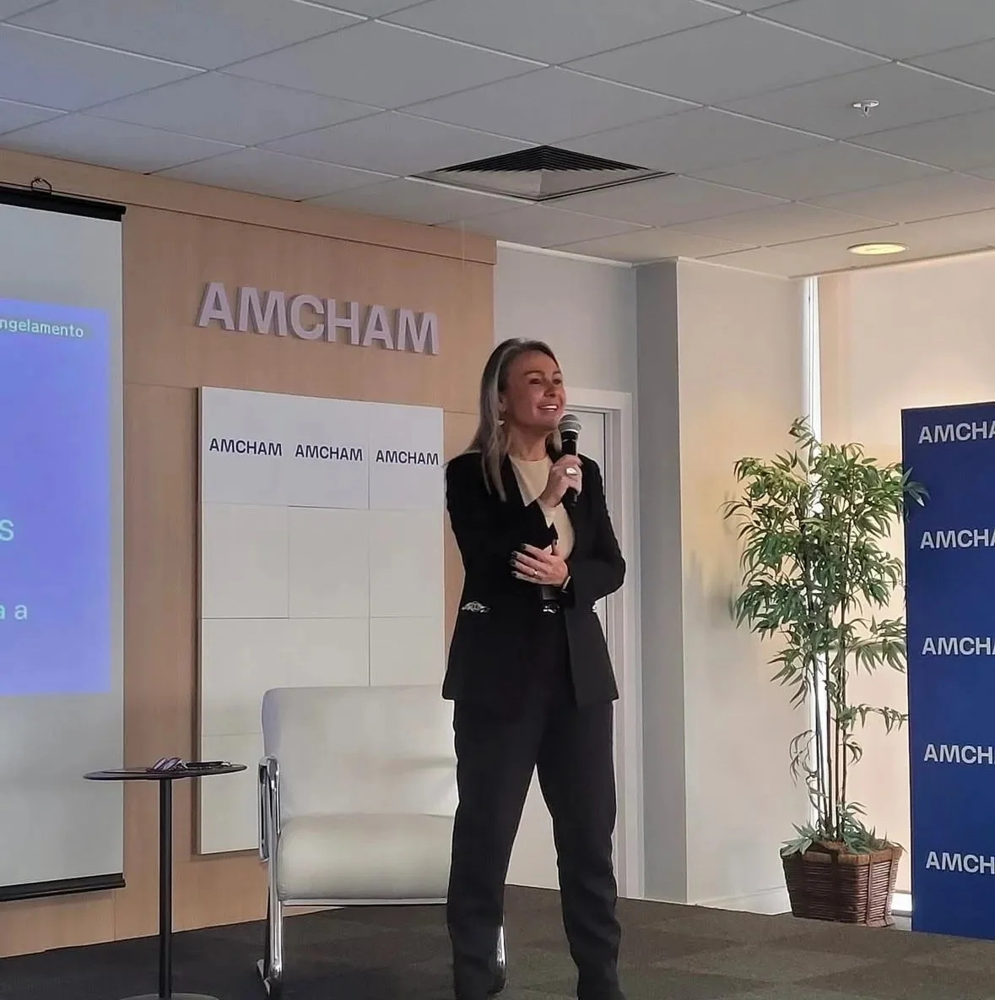
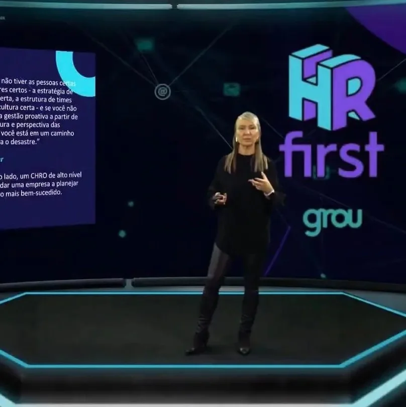
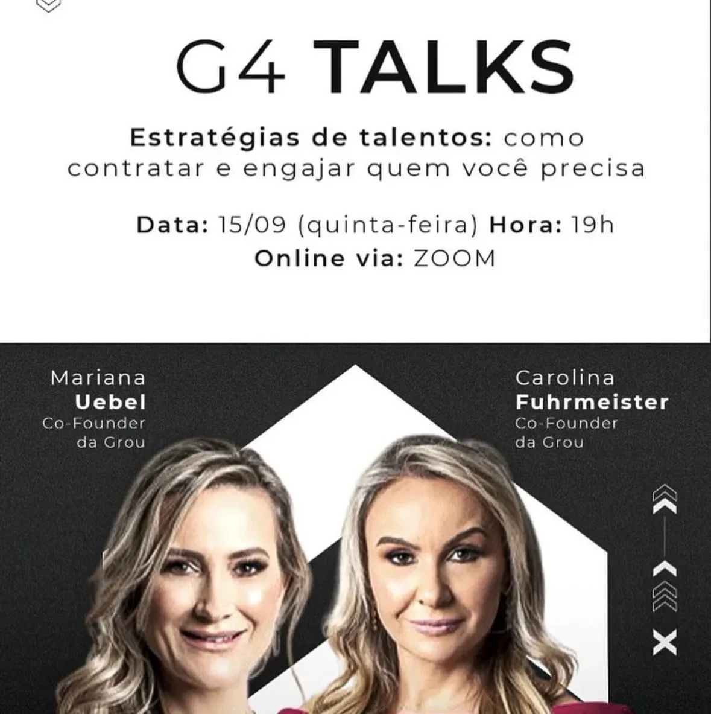
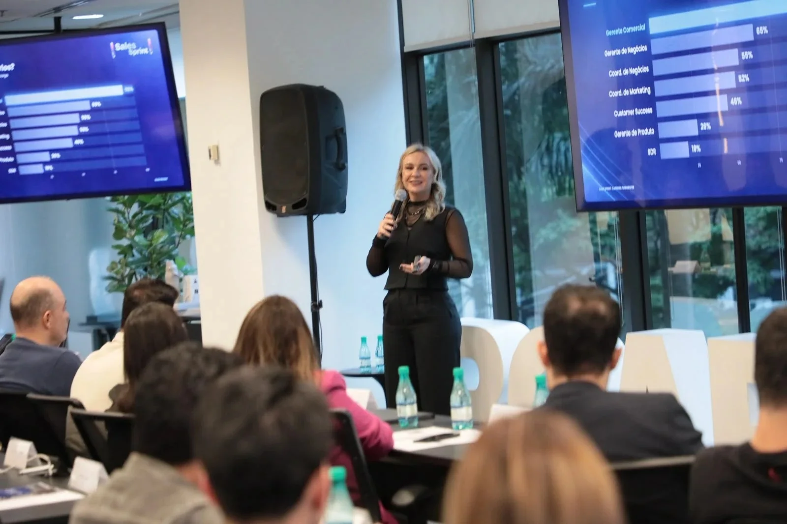
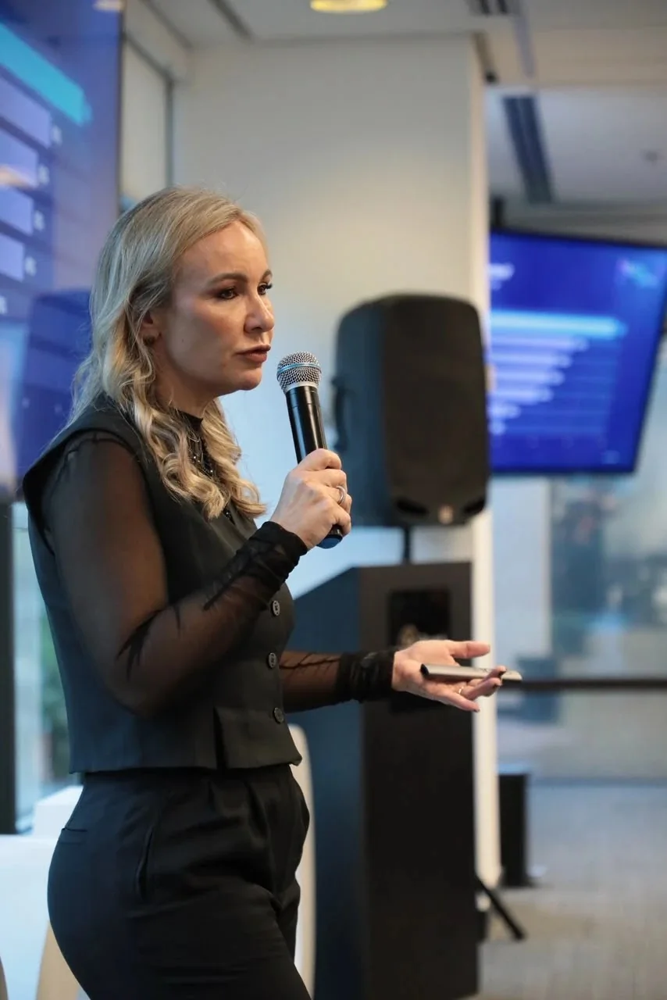

Palestras · Grou
Carolina
Fuhrmeister
Gente e resultado
na mesma frase.
Psicóloga, CRO e cofundadora da Grou.

Quem fala
Psicóloga de formação,
empresária por vocação.
Cofundadora da Grou, empresa de gestão de pessoas e desenvolvimento humano. Dinâmica e impaciente, mas com serenidade no coração: equilibra empresa, família e saúde mental, e leva essa vivência para o palco.
Cofundadora e CRO da Grou
Conselheira da I Love My Job
Curso de negociação em Harvard
Conselho e diretoria do Fórum da Liberdade (IEE)
CEO da Self Guru e Lumi
Membro do G4 Club
Carolina Fuhrmeister · Palestras
02 / 15
Por que ela
Fala de gente com a régua de quem responde por receita.
01
Psicologia
Comportamento humano, neurociência e saúde mental com base científica, sem discurso de autoajuda.
02
Receita
Como CRO da Grou, vive meta, funil e métrica. Liga o cuidado com as pessoas ao resultado do negócio.
03
Estrada
Empreendeu, vendeu um negócio, viveu uma aquisição e senta em conselho. Fala do que viveu.
Carolina Fuhrmeister · Palestras
03 / 15
Onde ela já falou
Palcos de RH, vendas e gestão.

RD Summit
RH Summit

AMCHAM

HR First
C Summit

G4 Talks

Sales Sprint
NR-1 Estratégica
Carolina Fuhrmeister · Palestras
04 / 15
“Não se pode exigir criatividade de um cérebro ocupado em se proteger.”
Carolina Fuhrmeister
Na palestra Performance sustentável começa com saúde mental
Carolina Fuhrmeister · Palestras
05 / 15
Palestra 01 · NR-1 · Saúde mental
Performance sustentável começa com saúde mental
01
A NR-1 como ganho, não como custo
Como mostrar o ganho invisível de incluir os riscos psicossociais na gestão.
02
Por que a pressão derruba a performance
O sistema de alarme do cérebro: sob ameaça, raciocínio, criatividade e autoeficácia caem.
03
De quem é a responsabilidade
O papel da empresa, do indivíduo e da liderança, com dados da McKinsey e da Gallup.
Para quem
RH, SESMT, lideranças e C-level de empresas que estão se adequando à NR-1.
Carolina Fuhrmeister · Palestras
07 / 15
Palestra 02 · Liderança
O líder e a dimensão humana do resultado
01
O peso do gestor no engajamento
70% da variação do engajamento das equipes pode ser atribuída ao gestor (Gallup, 2025).
02
Acolher sem invadir
Reconhecer sinais de sofrimento, orientar sem diagnosticar e encaminhar quando necessário.
03
Cuidar de quem cuida
Por que um líder esgotado não sustenta um time saudável, e o que a empresa precisa oferecer.
Para quem
Gestores, coordenadores e programas de desenvolvimento de lideranças.
Carolina Fuhrmeister · Palestras
08 / 15
Palestra 03 · Gestão comportamental
Dados, pessoas e performance: o papel do C-level
01
Comportamento também é dado
Usar avaliações comportamentais para decidir sobre gente com a mesma régua das decisões de negócio.
02
Cultura começa no topo
O que a diretoria sinaliza, sem perceber, sobre erro, segurança e desempenho.
03
Do indicador à conversa
Como transformar dados de pessoas em ações de liderança e resultado de valor.
Para quem
CEOs, diretoria, conselhos e RH estratégico.
Carolina Fuhrmeister · Palestras
09 / 15
Palestra 04 · Talentos
Contratar e engajar quem você precisa
01
Contratar por comportamento
Desenhar o perfil da vaga e avaliar o encaixe comportamental, além do currículo.
02
Engajar desde o primeiro dia
Integração e liderança próxima como fatores de retenção.
03
Errou na contratação? Aja cedo
Os sinais de desalinhamento e o que fazer antes de perder a pessoa, ou o resultado.
Para quem
Founders, gestores que contratam e times de RH e recrutamento.
Carolina Fuhrmeister · Palestras
10 / 15

Palestra 05 · Vendas
Vender é entender gente
01
O perfil certo em cada etapa
Pré-vendas, fechamento, sucesso do cliente e gestão comercial pedem perfis diferentes.
02
Máquina de vendas com gente dentro
Métrica, rotina e liderança, na visão de quem estruturou a área comercial da Grou como CRO.
03
Ler o cliente para negociar melhor
Comportamento do comprador e técnicas de negociação, com o que ela aprendeu em Harvard.
Para quem
Times comerciais, gestores de vendas e lideranças de receita.
Carolina Fuhrmeister · Palestras
11 / 15
Palestra 06 · Inspiração
Equilibrista: carreira, família e saúde mental
01
Coragem para começar e recomeçar
Da primeira loja ao conselho de empresa: o que ela aprendeu empreendendo e se reinventando.
02
Autocuidado é responsabilidade
Autoconhecimento, limites e hábitos para sustentar uma carreira de alta exigência.
03
Equilíbrio possível, não perfeito
Conciliar empresa, filhos, saúde e propósito sem fingir que é fácil.
Para quem
Convenções, encontros de liderança, semana da mulher, SIPAT e eventos de encerramento.
Carolina Fuhrmeister · Palestras
12 / 15
Formatos
Do palco ao programa de liderança.
01
Keynote
45 a 60 min
Palestra de abertura ou encerramento, para plateias de qualquer tamanho.
02
Talk e painel
30 a 90 min
Conversa com mediação e perguntas do público.
03
Workshop
3 a 4 h
Para lideranças: casos reais, prática e plano de ação.
04
Jornada in-company
Sob medida
Palestra, workshop e diagnóstico comportamental do time com as ferramentas da Grou.
Presencial ou online. Todos os temas podem ser adaptados ao formato e ao momento da empresa.
Carolina Fuhrmeister · Palestras
13 / 15
Como contratar
Quatro passos até o palco.
01
Briefing
Conversa com quem contrata: objetivo do evento, público e momento da empresa.
02
Proposta
Tema, formato, data e investimento, logo depois do briefing.
03
Conteúdo sob medida
Exemplos e dados do seu setor, com alinhamento final antes do evento.
04
Depois do palco
Material de apoio para os participantes e conversa de devolutiva com quem contratou.
Investimento
Sob consulta, conforme tema, formato, duração e local.
Carolina Fuhrmeister · Palestras
14 / 15
Vamos conversar
Vamos colocar a Carolina no seu palco?
br.linkedin.com/in/carolinafuhrmeister-grou
@carolinafuhrmeister
Site
grougp.com